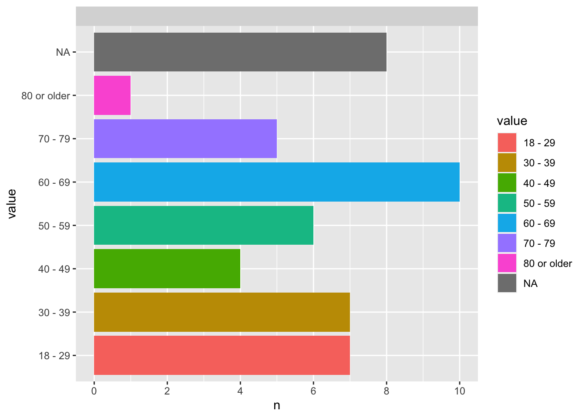
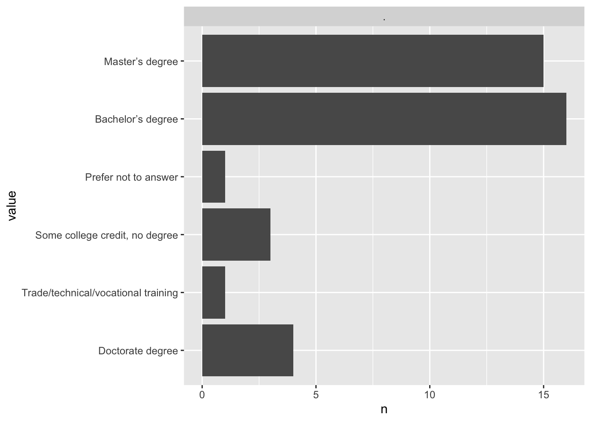
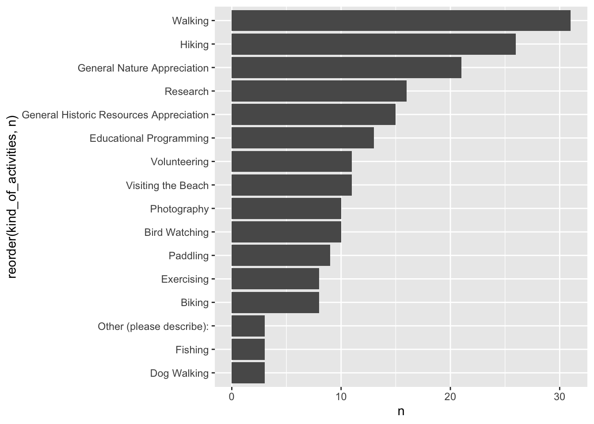

Report on the Guana Tolomato Matanzas National Estuarine Research Reserve Stakeholder Survey
Introduction
This survey aimed to collect feedback from diverse stakeholders to help guide management of the cultural resources at the Guana Tolomato Matanzas National Estuarine Research Reserve (GTM NERR) for the next 100 years. This survey is part of the project ‘From Past to Present: Ecosystem Services and People of the Guana Peninsula’, directed by Sarah Miller. The aim of the project is to better understand how people have utilized and expressed value for ecosystem services historically, how they continue to use them today, and how they can respond to the threats these resources are facing through 2100. The goals of the survey were:
- To understand community connections and uses of sites and the landscape
- To understand community aspirations for the future given the potential impacts from climate change and development.
In this report we
Demographics
Age Range

Ten respondents fall into the 60-69, which is the most populous age range. Around eight respondents did not select their age range/choose to answer. Ages 18-29 and 30-19 have seven respondents each. Five respondents were between 70-79. 50-59 had six respondents while 40-49 had four. Only one respondent selected 80 or older.
As seen in Figure 1, ten of the respondents who chose to state their age range are 60-69. Around eight respondents did not select their age range/choose to answer. Ages 18-29 and 30-19 have seven respondents each. Five respondents were between 70-79. 50-59 had six respondents while 40-49 had four. Only one respondent selected 80 or older.
Ethnicity
As seen in Figure 2, a majority of survey respondents identified as Caucasian and comprised of 32 individuals in the survey. 3 respondents identified as multi-racial, 2 as African American and 1 as Asian/Pacific Islander. 1 respondent chose the ‘prefer not to answer’ option. (1 person preferred to self-identify as ‘human’ in the text column).
As seen in Figure 2, a majority of survey respondents identified as Caucasian and comprised of 32 individuals in the survey. 3 respondents identified as multi-racial, 2 as African American and 1 as Asian/Pacific Islander. 1 respondent chose the ‘prefer not to answer’ option. (1 person prefered to self-identify as ‘human’ in the text column).
Gender Identity
As seen in Figure 3, most of the survey respondents self-identify as female, at 29. 9 respondents identify as male, and a few chose not to say. No one wrote in any preferred self-identifier.
Highest degree or level of schooling

As seen in Figure 4, a majority of respondents either hold a bachelor’s or master’s degree as their highest level of schooling. 16 respondents listed a bachelor’s degree as their highest level of school, while 15 individuals hold a master’s degree and 4 respondents have a doctorate degree. 3 individuals responded that they have earned some college credits but no degree. 1 respondent has trade/technical,vocational training, and 1 respondent chose the ‘prefer not to answer’ option.
Visiting the Guana Tolomato Matanzas (GTM) Research Reserve


As seen in Figure 6, the most common activity for that respondents report doing at the GTM Research Reserve is walking, at 31. The next most frequent activity is hiking, with 26 respondents self-reporting partaking in this activity. More general recreational activities like walking, hiking, and general nature appreciation are more dominant than more specific recreational activities like visiting the beach, photography, bird watching, paddling, exercising, biking, fishing and dog walking. Research is the most dominant non-recreational activity, at 16 survey respondents. Research, General Historic Resources Appreciation, Educational Programming, and Volunteering are non-recreational activities that are clustered together with between 16 and 11 individuals reporting participation in them.
As we can see in Figure 7, all survey respondents were familiar with the Spanish colonist culture, the Timucua culture, the British colonist culture, and the Seminole culture. More than thirty visitors were familiar with the Spanish colonist culture, as well as with the Timucua culture, and Gullah Geechee culture. Survey respondents were least familiar with the Guale culture, and the ancestral period native cultures.

In ?@fig-cultural-resources, we can see that all survey respondents are at least moderately familiar with the shipwrecks and historic cemeteries, as none report being “not familiar at all” with these cultural resources. Around fourteen people report being very familiar with the wells. More than fiften people are only slightly familiar with the canals in the area. Respondents are most unfamiliar with the remains of industrial activity, shell rings, as well as ship hards, docks, and wharves. Less than five respondents report being unfamiliar with mounds, canals, “slave” cabins, Spanish missions, remains of agricultural activity, shell middens, and plantations.
Figure 9 shows that more than twenty survey respondents have never encountered “slave” cabins, the remains of industrial activity or Spanish missions respectively, at the GTM Research Reserve. Almost twenty respondents report that they have never encountered plantations, ship hards, docks, and wharves, or shipwrecks each, at the reserve. Shell Middens are the most frequently encountered cultural resource at the GTM Research Reserve, with more than fifteen respondents. Respondents are most unsure as to whether or not they have encountered shell rings at the GTM Research reserve. We can also see that respondents report encountering wells with some level of frequency, more encountering them overall than not.

Respondents overwhelmingly report that they have noticed increased coastal erosion at the GTM research reserve, at more than 25, as seen in Figure 10. Changes in seasonality, a high water table, and species shifts or extinctions are less prominently noticed at the reserve. Other more noticeable effects of climate change are increased and intensified storm events, increased flooding events, increasing temperatures, and increasing frequency or severity of storms, with more than fifteen respondents reporting that they notice or have experienced these effects a lot at the reserve.

In Figure 11, we can see that respondents percieve sea level rise as a major threat to the cultural resources at the reserve, more than ten respondents ranking it as the top threat to cultural resources. Increasing and intensified storm events are clustered around higher degrees of the threat to cultural resources, at six or higher. Notably, almost fifteen respondents rank flooding as the third most threatening effect of climate change to the reserve. Development is also ranked as the top threat to resources by more than ten survey respondents. Overuse, infrastructure, and management issues are perceived as less threatening by survey respondents. Noticeably, aside from development, climate change related threats, including sea level rise, increased and intensified storm events, and flooding, are ranked by most survey respondents as the greatest threats to the reserve.
Age and activity

In Figure 12, we can observe that all survey respondents who walk their dogs while visiting the reserve fall within the age range of 40-49. As we saw in Figure 6, the most common activities among survey respondents included walking, hiking, and general nature appreciation, with more than twenty respondents reporting partaking in each of these activities. In Figure 12, we can see overlap. The most common activities involving respondents distributed across each of seven out of the eight age ranges, are walking, general nature appreciation, and general historic resources appreciation. Research is also among these in Figure 12, with seven out of the eight age ranges partaking in this activity while at GTM. The activity undertaken in the greatest proportion for the 18-29 age range is general resources appreciation, comprising one quarter of those who participate in that activity. Notably, at the most numerous age range, including ten respondents, individuals ranging between 60-69 comprise varying proportion of every activity, except dog walking. Age by awareness of cultural resources

In Figure 13 more than 6 respondents between ages 60-69 report familiarity with both “Slave” cabins and Plantations. Two or fewer respondents in this age range report familiarity with canals and the remains of industrial activity at the reserve. The least number of respondents across the age ranges report familiarity with the cultural resource of canals. Six respondents in the 30-39 age range report that they are familiar with shell middens and historic cemeteries. Respondents in the ages 70-79 and 80 or older do not report awareness of historic cemeteries, the remains of agricultural activity, shipwrecks, or the remains of industrial activity. Five respondents between 40-49 report familiarity with wells, and four in this range report familiarity with “Slave” cabins, shell rings, Spanish missions, shell middens, historic cemeteries, and plantations. Four respondents ages 50-59 report familiarity with mounds and “Slave” cabins. There are respondents in higher numbers across all ranges who are familiar with mounds and shell middens, whereas few respondents of any age range report familiarity with ship hards, docks, and wharves, the remains of agricultural activitity, and the remains of industrial activity, and canals.
Age by cultures encountered
In Figure 14 no respondents older than 80 report encountering any of these cultural resources at the GTM. Six respondents in the range 18-29 report encountering shell middens, which is the greatest number of respondents belonging to any age group reporting an encounter with any cultural resource. Similarly, 5 respondents ages 60-69 report encountering shell middens, 4 respondents in the age range 30-39, and three or fewer in each of the remaining age ranges report encountering middens. Five respondents ages 60-69 also report encountering the remains of agricultural activitity. No respondents in the age 18-29 report encountering historic cemeteries. Five respondents aged 30-39 report encountering wells at the GTM. One respondent belonging to the 18-29, one to 30-39, one to 40-49, and one to the 70-79 age range report encountering “Slave” cabins. Respondents report encountering the remains of industrial activity and Spanish Missions in the fewest numbers overall.
Activity and Level of Education
In Figure 15 , of the more than fifteen respondents who take part in research, almost all respondents report that they have a degree. In educational programming, more than 7 respondents report having a degree, while two or more do not, or report other. Most of the respondents taking part in any other activity are likely to have a degree because most of the survey respondents reported having at either a master’s bachelor’s degree in Figure 4.
Awareness of cultural resources by Level of Education
In Figure 16 we can see that respondents without degrees report awareness of shell middens, mounds, and the remains of agricultural activity in greatest quantity. The most respondents with degrees report familiarity with “Slave” cabins and shell middens in the greatest numbers, at more than twenty each. Respondents with degrees almost halve when reporting familiarity with canals, remains of agricultural activitity, and remains of industrial activity, at less than ten respondents. Respondents without degrees do not report familiarity with historic cemeteries, and those selecting “other” report no familiarity with ship hards, docks, wharves, canals, and the remains of industrial activity.
Awareness of cultural resources by ethnicity
In Figure 17, since most of the survey respondents identify as Caucasian (non-Hispanic), as seen in Figure 2 , this demographic reports awareness of cultural resources at the GTM in the greatest quantity. One or more respondents who identify as multiracial report awareness of all of these cultural resources at the GTM. No respondents who identify as African-American, Asian/Pacific Islander, preferred not to answer or self-identified some other way reported awareness of canals, remains of industrial activity, or ship hards, docks, and wharves. Shell middens are the cultural resource that the greatest range of respondents across chosen demographic categories report awareness about, with awareness reported by respondents from all but one self-identified ethnicity.
Awareness of cultural resources by gender

In ?@fig-gender-awareness-cult-res, we can see that respondents who identify as female report awareness of cultural resources in the greatest proportions overall. Notably, canals are more evenly split at around half of those reporting awareness identifying as female, while the remaining half identifies as male, or else preferred not to say. Female respondents report awareness in the lowest proportion for this cultural resource. Indviduals who preferred not to say their gender identity do not report awareness of wells. Roughly one quarter of respondents who report awareness of wells, ship hards, docks, wharves, and the remains of industrial activity identify as male.
Cultures encountered by ethnicity
In Figure 20, we can see that multi-racial respondents in their greatest proportion report encountering plantations at the GTM. Asian/Pacific islander respondents in their greatest proportions report encountering “Slave” cabins, SPanish Missions, and the Remains of industrial activities. No Asian/pacific islander respondents report encountering historic cemeteries at the GTM. No African-American respondents report encountering shell middens at the GTM. African-American respondents report encountering Spanish missions, the remains of industrial activity, and “Slave” cabins in roughly equal proportion. Caucasion (non-Hispanic) respondents comprise the greatest proportion of respondents by demographic who report encountering shell middens.
Cultures encountered by Gender

In Figure 21 , respondents who report encountering “Slave” cabins are fewest uniformly across gender. Respondents who identify as female comprise the greatest number of survey respondents as seen in Figure 3. Encounters with shell middens are uniformly high across gender. The greatest number of respondents who preferred not to say their gender report that they have encountered shell middens at the GTM, whilst none in this group report encountering historic cemeteries. Fewer than five respondents who identify as male report encountering ship hards, docks, and wharves, historic cemeteries, Spanish missions, “Slave” cabins, and remains of industrial activity at the GTM research reserve. More than five respondents who identify as male report encountering wells, remains of agricultural activity, canals, and shell middens at the GTM research reserve. More Fifteen or more respondents who identify as female report encountering wells and shell middens at the GTM research reserve, and just under 15 report encountering the remains of agricultural activity.
Biggest threat by age
In Figure 22 we can see that respondents from all age groups rank sea level rise as the most threatening, or among the most threatening to cultural resources at the GTM. Similarly, respondents across all ages tend to rank climate related concerns like flooding, increased and intensified storm events as among the most threatening to the cultural resources at the reserve. Respondents between 18-29 and 50-59 tend to rank infrastructure (e.g. construction of roads) in the latter two thirds of the threat to cultural resources at the reserve. Similarly respondents across the age ranges rank management issues, and overuse as concerns that are less threatening to cultural resources. Notably, concerns about overuse are the most stratified in the 60-69 age range, with respondents ranking this concern as 1st, 2nd, 4th, or 6th-9th most threating to cultural resources at the reserve. There is similar stratification in this age range for infrastructure, tending to cluster in the 1st-4th most threatening concern for this age group.
Biggest Threat by ethnicity
In Figure 23 we can see that respondents who identify as African-American do not rank sea level rise, flooding, increased and intensified storm events, or wave action as the 1st or greatest threat to cultural resources at the GTM. African-American respondents ranked infrastructure (e.g. construction of roads), and “other” are the ranked as the most threatening. Development is the 2nd or 3rd greatest threat to the cultural resources for some African-American respondents in this demographic, whilst other African-American respondents rank increased and intensified storm events as the most threatening. Multi-racial respondents ranked development, management issues, and overuse as the most threating to cultural resources at the GTM. The rankings of individuals who identify as Caucasian (non-Hispanic) are the most stratified across threat level for each of the plots (with the exception of “Other (please describe)”) because, as seen in Figure 2, survey respondents are the most numerous in this demographic. No respondents who identify as non-Caucasian ranked flooding, increased and intensified storm events, or development as belonging in the lower third (7th-9th) or least threatening to cultural resources.
Biggest Threat by Gender
In Figure 24, respondents across all genders rank sea level rise and flooding as 7th most threatening to cultural resources at the reserve, or higher. Similarly, no respondents of any gender rank increased and intensified storm events as less threaning than the 6th most threatening to cultural resources at the reserve. Female and male respondents tend to group climate related threats as more highly threatening to cultural resources, whereas overuse and management issues tend to be ranked as less threatening to cultural resources at the reserve. Overall, concerns seem to align across gender.
Biggest Threat by level of education
In Figure 25, respondents who have degrees assign stratified and individualized rankings across the given list of potential threats to the cultural resources at the reserve. Interestingly, there are respondents with degrees, with no degrees, or “other” who all rank increased and intensified storm events in the top two thirds (1-6) of their most threatening issues to the cultural resources at the reserve. Individuals without degrees also rank sea level rise and wave action amongst their top two threats to cultural resources at the reserve. Individuals without degrees rank infrastructure, overuse, and management issues as less threatening to cultural resources at the reserve.